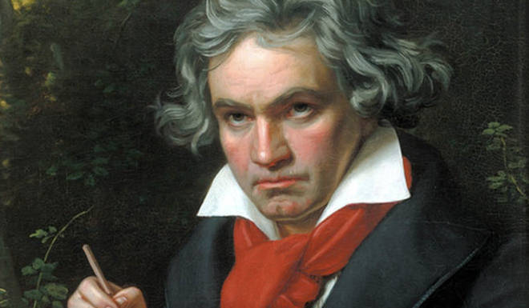
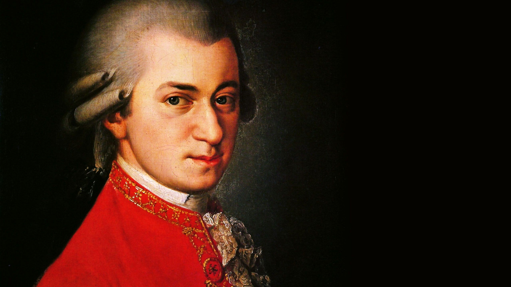
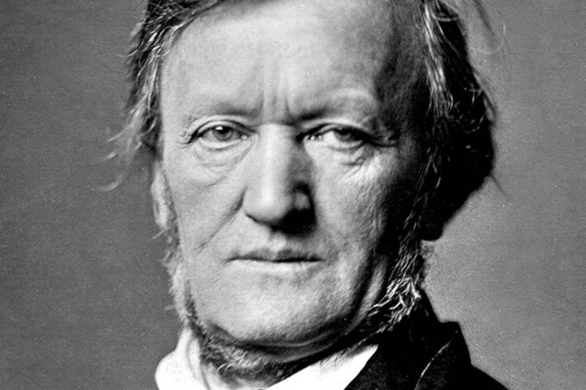

Here's our list for some of the most iconic and beautiful classical music pieces of all time
#1 Beethoven's Fifth symphony
The Symphony No. 5 in C minor of Ludwig van Beethoven, Op. 67, was written between 1804 and 1808. It is one of the best-known compositions in classical music and one of the most frequently played symphonies, and it is widely considered one of the cornerstones of western music. First performed in Vienna's Theater an der Wien in 1808, the work achieved its prodigious reputation soon afterward. E. T. A. Hoffmann described the symphony as "one of the most important works of the time". As is typical of symphonies in the classical period, Beethoven's Fifth Symphony is in four movements.The symphony, and the four-note opening motif in particular, are known worldwide, with the motif appearing frequently in popular culture, from disco versions to rock and roll covers, to uses in film and television.
#2 Mozart's symphony no.40
Symphony No. 40 in G minor, K. 550 was written by Wolfgang Amadeus Mozart in 1788. It is sometimes referred to as the "Great G minor symphony", to distinguish it from the "Little G minor symphony", No. 25. The two are the only extant minor key symphonies Mozart wrote. A typical performance of the symphony lasts about 25 minutes.
#3 Four Seasons by Vivaldi

(winter of the "Four Seasons")
The Four Seasons (Italian: Le quattro stagioni) is a group of four violin concerti by Italian composer Antonio Vivaldi, each of which gives musical expression to a season of the year. They were written around 1716–1717 and published in 1725 in Amsterdam, together with eight additional concerti, as Il cimento dell'armonia e dell'inventione (The Contest Between Harmony and Invention). The Four Seasons is the best known of Vivaldi's works. Though three of the concerti are wholly original, the first, "Spring", borrows motifs from a sinfonia in the first act of Vivaldi's contemporaneous opera Il Giustino. The inspiration for the concertos is not the countryside around Mantua, as initially supposed, where Vivaldi was living at the time, since according to Karl Heller they could have been written as early as 1716–1717, while Vivaldi was engaged with the court of Mantua only in 1718. They were a revolution in musical conception: in them Vivaldi represented flowing creeks, singing birds (of different species, each specifically characterized), a shepherd and his barking dog, buzzing flies, storms, drunken dancers, hunting parties from both the hunters' and the prey's point of view, frozen landscapes, and warm winter fires.
#4 Ride of the Valkyries by Wagner
The "Ride of the Valkyries" (German: Walkürenritt or Ritt der Walküren) refers to the beginning of act 3 of Die Walküre, the second of the four operas constituting Richard Wagner's Der Ring des Nibelungen. As a separate piece, the "Ride" is often heard in a purely instrumental version, which may be as short as three minutes. Together with the "Bridal Chorus" from Lohengrin, the "Ride of the Valkyries" is one of Wagner's best-known pieces.
#5 In the Hall of the Mountain King by Edvard Grieg
"In the Hall of the Mountain King" (Norwegian: I Dovregubbens hall, lit. 'In the Dovre man's hall') is a piece of orchestral music composed by Edvard Grieg in 1875 as incidental music for the sixth scene of act 2 in Henrik Ibsen's 1867 play Peer Gynt. It was originally part of Opus 23 but was later extracted as the final piece of Peer Gynt, Suite No. 1, Op. 46. Its easily recognizable theme has helped it attain iconic status in popular culture, where it has been arranged by many artists.